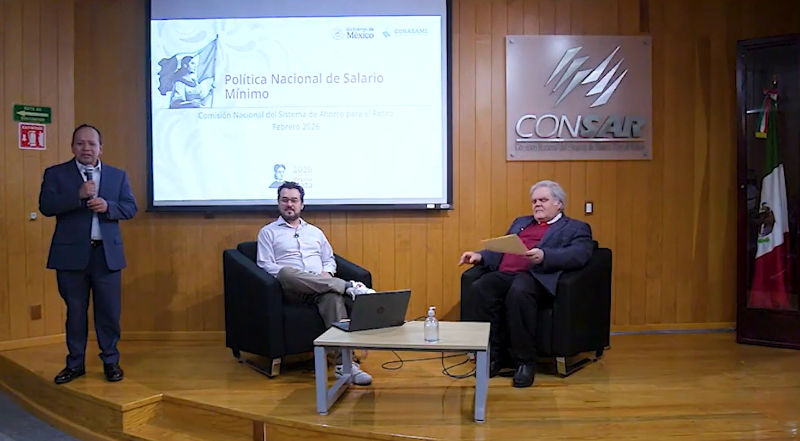

Análisis del salario mínimo y su efecto en la seguridad social
Sumando ideas para el retiro
Durante el mes de febrero se llevó a cabo el Segundo Seminario CONSAR, titulado “Efectos del
incremento sostenido de los salarios mínimos en las pensiones y el bienestar en México”.
El seminario contó con la destacada participación del Dr. Luis Felipe Munguía Corella,
presidente
de la Comisión Nacional de los Salarios Mínimos, y fue moderado por el Mtro. Héctor Santana
Suárez, Titular de la Unidad de Seguros, Pensiones y Seguridad Social de la SHCP.
La sesión abordo el tema de los efectos del incremento sostenido del salario mínimo en el
sistema de pensiones, así como sus implicaciones en el bienestar de la población mexicana.
A través de un diálogo abierto, se propició el intercambio de ideas y perspectivas,
enriqueciendo la comprensión de este tema para la política pública y la seguridad social en México.
La sesión no solo fortaleció el análisis técnico del vínculo entre salario mínimo y pensiones,
sino que también reafirmó la necesidad de mantener espacios de discusión informada que
contribuyan a la construcción de soluciones sostenibles y equitativas para la población
trabajadora.
